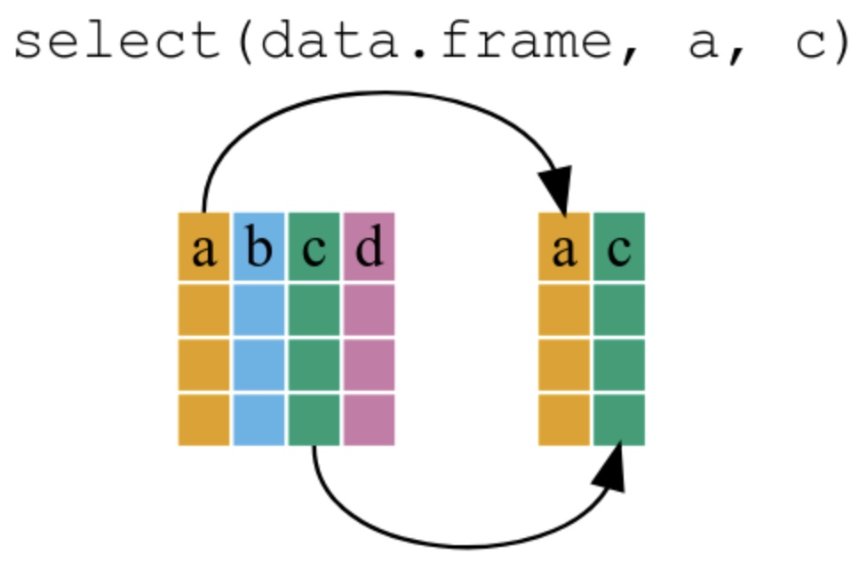
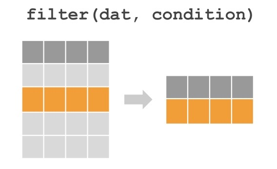
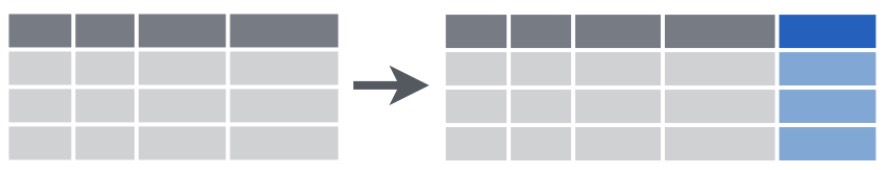
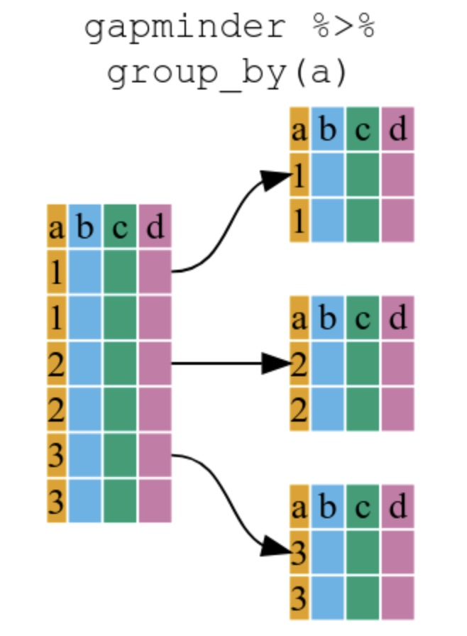
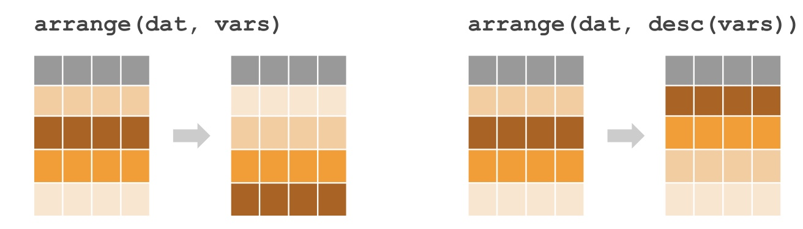

# Exemplo: Atribuição de valores a variáveis
receita_mensal <- 850000 # Receita mensal da empresa
custos_mensais <- 500000 # Custos mensais
# Cálculo do lucro
lucro_mensal <- receita_mensal - custos_mensais
lucro_mensal[1] 350000Um tutorial básico sobre a linguagem R para Ciência de Dados.

Em R, os termos “variável” e “objeto” são frequentemente usados de forma intercambiável, o que pode causar confusão inicial, especialmente para quem já possui experiência com outras linguagens de programação. Esta seção esclarece essa terminologia para facilitar seu aprendizado.
Por questões de clareza e para facilitar seu aprendizado:
Utilizarei o termo variável principalmente quando falarmos de valores simples que “variam”, como números, textos ou valores lógicos. Este termo é mais intuitivo para iniciantes e comum em estatística e análise de dados.
Utilizarei o termo objeto quando precisarmos enfatizar a natureza mais complexa de algumas estruturas em R, como data frames, listas, funções ou quando discutirmos conceitos mais avançados.
Em muitos contextos, usarei ambos os termos de forma intercambiável, refletindo a prática comum na comunidade R.
Esta flexibilidade terminológica espelha a documentação oficial da linguagem R e a literatura sobre a linguagem, preparando você para diferentes materiais que poderá encontrar em sua jornada de aprendizado.
Este entendimento sobre variáveis e objetos em R estabelece uma base conceitual importante antes de mergulharmos nos tipos específicos de dados e em como manipulá-los para análises eficazes.
Em R, a atribuição de valores a variáveis é fundamental para armazenar e manipular dados. Por exemplo, podemos criar variáveis para armazenar informações financeiras, como receitas, custos e lucros, que são essenciais para análises em Administração.
# Exemplo: Atribuição de valores a variáveis
receita_mensal <- 850000 # Receita mensal da empresa
custos_mensais <- 500000 # Custos mensais
# Cálculo do lucro
lucro_mensal <- receita_mensal - custos_mensais
lucro_mensal[1] 350000Todas as instruções R com as quais criamos variáveis ou objetos têm o mesmo formato:
nome_do_objeto <- valorLemos esse código como: “valor é atribuído a nome_objeto”
Em R, podemos atribuir informações às variáveis (ou objetos) utilizando os seguintes operadores de atribuição:
# Diferentes formas de atribuição em R
# Mesmo resultado, estilos diferentes
# Operador recomendado (<-)
receita_mensal <- 850000
receita_mensal[1] 850000# Alternativa (=), funciona, mas menos
# recomendado
lucro_operacional = 320000
lucro_operacional[1] 320000Em R, como em todas as linguagens, fazemos muitas atribuições de valores a variáveis, e não é agradável digitar o operador manualmente. Assim, o RStudio oferece um atalho de teclado simples para inserir o operador <-:
Atalho do RStudio: Alt + - (Windows/Linux) ou Option + - (Mac)
Observe que o RStudio automaticamente envolve <- com espaços, o que é uma boa prática de formatação de código.
Códigos sem espaços são difíceis de ler compare:
lucro<-receita-custos versus
lucro <- receita - custos
Evite os seguintes erros comuns:
dados, resultado, xreceita_anual, lucro_liquidocalculo_da_margem_de_contribuicao_ajustadamargem_contribuicaomargem bruta <- 0.35 (causa erro)margem_bruta <- 0.351trimestre <- "Janeiro-Março" (inválido)trimestre1 <- "Janeiro-Março"mean <- 10 (sobrescreve a função mean())media <- 10Em R, existem algumas formas simples e eficazes de exibir informações sobre objetos ou variáveis. Esses métodos são ideais para visualizar valores, depurar código ou criar saídas personalizadas. Abaixo estão as principais formas:
1. Usando print()
A função print() é a maneira mais básica de exibir o conteúdo de um objeto:
# Exemplo: Usando print()
receita <- 850000.50
print(receita) # Exibe o valor da variável[1] 850000.52. Imprimindo diretamente no console
Em R, você pode exibir o conteúdo de um objeto simplesmente digitando seu nome no console. Isso chama automaticamente a função print() implicitamente:
# digitar o nome do objeto exibe seu valor
receita [1] 850000.53. Usando a função cat()
A função cat() permite exibir informações de forma mais personalizada, combinando texto e valores. É útil para criar mensagens ou relatórios simples.
# a funçaão cat() combina texto e valor
cat("A receita mensal é:", receita) A receita mensal é: 850000.5Resumo:
Use print() para exibir valores de forma explícita.
Digite o nome do objeto diretamente no console para exibir seu valor de forma rápida.
Use cat() para criar saídas personalizadas, combinando texto e valores.
Em R, os dados são armazenados em diferentes tipos atômicos (básicos), cada um com características específicas. A Tabela 3 mostra os principais tipos.
| Tipo | Classe | Descrição |
|---|---|---|
double |
numeric |
um vetor contendo valores reais (números com casas decimais) |
integer |
numeric |
um vetor contendo valores inteiros (números sem casas decimais) |
character |
character |
um vetor contendo valores de texto (caracteres) |
logical |
logical |
um vetor contendo valores lógicos (TRUE/FALSE) |
A Tabela 2 exibe alguns tipos especiais que podem aparecer em análises de dados.
| Tipo | Descrição |
|---|---|
NA |
Not Available: representa dados faltantes |
NaN |
Not a Number: (ex: 0 / 0) |
Inf |
+ \infty ou - \infty: (ex: 1 / 0) |
Na prática da Ciência de Dados, estima-se que analistas e cientistas dedicam entre 60% a 80% do tempo de um projeto à importação, limpeza e preparação dos dados antes de iniciar análises mais sofisticadas. Compreender profundamente os tipos e classes de dados em R é fundamental por várias razões:
Evita erros sutis de processamento: Operações matemáticas em dados textuais ou cálculos com valores ausentes podem produzir resultados inesperados.
Otimiza o desempenho: Estruturas de dados apropriadas melhoram a eficiência computacional, especialmente em conjuntos grandes.
Facilita transformações: O conhecimento dos tipos permite conversões adequadas (como texto para número) sem perda de informação.
Melhora a interpretabilidade: Identificar corretamente dados faltantes (NA), indefinidos (NaN), ou infinitos (Inf) é crucial para conclusões válidas.
Aumenta a compatibilidade: Diferentes funções e pacotes em R exigem tipos específicos de dados como entrada.
O domínio dos tipos e classes de dados não é apenas uma questão técnica, mas um requisito fundamental para análises confiáveis em contextos administrativos e financeiros. Este conhecimento permite ao analista de dados concentrar-se mais nos insights e menos na correção de problemas estruturais nos dados.
double e integerEm R, existem dois tipos principais de dados numéricos:
double: Armazena números com casas decimais (ponto flutuante), ideal para valores monetários, índices financeiros, taxas percentuais e outras medidas que exigem precisão decimal.
integer: Armazena números inteiros sem casas decimais, útil para contagens, quantidades discretas e índices em séries temporais.
Na prática de Administração e Finanças, o tipo double é frequentemente utilizado para representar valores monetários, taxas de juros ou indicadores financeiros, enquanto integer é mais comum para representar quantidades como número de funcionários, produtos vendidos ou períodos de análise.
O sufixo L após um número (como em 50L) indica explicitamente que se trata de um valor inteiro. Na maioria das operações, R utiliza automaticamente o tipo mais apropriado, o que simplifica a programação para análises financeiras e administrativas.
# double (números com casas decimais)
receita <- 850000.50
# integer (números inteiros)
total_funcionarios <- 50L
# verifica os tipos
typeof(receita)[1] "double"typeof(total_funcionarios)[1] "integer"numeric
Apesar dos tipos double e integer representarem números decimais e inteiros de forma diferente, ambos pertencem à classe numeric, assim, na maioria das situações, você não precisa se preocupar com a possível diferença.
class(receita)[1] "numeric"class(total_funcionarios)[1] "integer"Diferença entre typeof e class
Em R, as funções typeof e class fornecem informações diferentes sobre um objeto:
typeof: Retorna o tipo interno do objeto, ou seja, como R armazena o objeto na memória. Por exemplo:typeof(receita) # Retorna "double"
typeof(total_funcionarios) # Retorna "integer"class: Retorna a classe do objeto, que define como R trata o objeto em operações e funções. Por exemplo:class(receita) # Retorna "numeric"
class(total_funcionarios) # Retorna "numeric"Em resumo:
typeof para entender como R armazena o objeto internamente.class para entender como R trata o objeto em operações e funções.characterO tipo character é essencial para armazenar e manipular informações textuais. Este tipo de dado armazena sequências de caracteres (texto) e é indicado por aspas simples (') ou duplas (").
Em contextos de Administração, o tipo character é utilizado para armazenar:
A manipulação de dados textuais é particularmente importante em análises de mercado, pesquisas de satisfação, classificação de produtos e organização de relatórios gerenciais, onde a categorização textual precede análises quantitativas.
# character (texto)
instituicao <- "IFMG - Campus Formiga"
# verifica o tipo
typeof(instituicao)[1] "character"logicalO tipo logical representa valores booleanos (TRUE ou FALSE) e é fundamental para operações condicionais e filtragem de dados.
Em contextos práticos de gestão e finanças, o tipo logical é utilizado para:
Os valores TRUE e FALSE devem ser escritos em maiúsculas em R, e podem ser abreviados como T e F, respectivamente, embora a forma completa seja recomendada para maior clareza do código.
# logical (lógico, TRUE/FALSE)
lucro_positivo <- TRUE
lucro_negativo <- FALSE
# verifica o tipo
typeof(lucro_positivo)[1] "logical"typeof(lucro_negativo)[1] "logical"NAO tipo especial NA (Not Available) é comum em análises de dados reais, onde frequentemente nos deparamos com informações ausentes. Em contextos de Administração e Finanças, dados faltantes podem representar:
Identificar e tratar corretamente os valores NA é essencial para evitar conclusões tendenciosas. R oferece funções específicas como is.na() para detectar valores ausentes e métodos estatísticos para lidar com eles de forma apropriada.
# Exemplo: Detectando valores ausentes em dados de vendas
vendas_trimestrais <- c(150000, 165000, NA, 180000)
is.na(vendas_trimestrais) [1] FALSE FALSE TRUE FALSE# calculando a média excluindo valores ausentes
mean(vendas_trimestrais, na.rm = TRUE)[1] 165000O tratamento adequado de dados falantes é uma habilidade fundamental em Ciência de Dados.
NaNO valor NaN (Not a Number) ocorre quando uma operação matemática produz um resultado indefinido. Em contextos de gestão e finanças, este tipo especial pode surgir em:
Enquanto NA representa dados ausentes, NaN indica especificamente um resultado numérico indefinido. Diferenciá-los é importante para diagnóstico de problemas em cálculos complexos, como em modelos de precificação de ativos ou simulações financeiras.
A função is.nan() permite identificar estes valores em conjuntos de dados:
# Exemplo: Identificando resultados indefinidos em cálculos financeiros
resultados <- c(25, 0/0, 10)
is.nan(resultados) [1] FALSE TRUE FALSEinfO valor especial Inf (e -Inf para infinito negativo) ocorre principalmente em divisões por zero e representa valores que excedem os limites computacionais. Em análises administrativas e financeiras, este tipo pode aparecer em:
Diferentemente de NA e NaN, valores Inf podem ser utilizados em operações aritméticas seguindo regras matemáticas de infinito:
# Exemplo: Comportamento de infinito em operações
infinito_positivo <- 1/0
infinito_positivo + 1000 # Continua sendo Inf[1] Infinfinito_positivo / 2 # Continua sendo Inf[1] InfIdentificar valores infinitos é importante, por exemplo, em modelos financeiros, pois podem indicar problemas estruturais nas fórmulas utilizadas ou divisões por zero que comprometem a validade das análises.
Você pode estar se perguntando como converter um tipo ou classe de dados em outro(a) (por exemplo, transformar um texto em número ou vice-versa).
Embora R base ofereça funções como as.numeric(), as.character() e as.logical() para essas conversões, abordaremos este tópico mais adiante no tutorial, quando estudarmos a manipulação de dados com o pacote dplyr.
Especificamente, aprenderemos como usar as funções mutate() e transmute() para realizar conversões de tipos de maneira eficiente e legível em conjuntos de dados estruturados. Esta abordagem se alinha com as práticas modernas de ciência de dados e permite transformar múltiplas variáveis simultaneamente dentro de um fluxo de trabalho analítico coerente.
Por enquanto, foque em compreender as características e comportamentos dos diferentes tipos de dados apresentados nesta seção, pois este conhecimento fundamentará toda sua jornada na análise de dados com R.
A função básica para criar vetores é c(), que concatena valores.
# Vetor numérico simples
dados <- c(3.5, 4.2, 6.7, 2.3)
# Sequência de números inteiros de 1 a 10
sequencia <- 1:10
# Sequência espaçada uniformemente de 0 a 1 com intervalo 0.25
intervalos <- seq(0, 1, by = 0.25)
# Repetição de um valor lógico
status <- rep(TRUE, times = 5)Se você combinar tipos diferentes em um mesmo vetor, R converte automaticamente todos os elementos para um único tipo mais flexível:
c(5, "R", TRUE) # Todos convertidos para "character"[1] "5" "R" "TRUE"Utilize colchetes [] para selecionar elementos. Lembre-se de que a indexação no R começa por 1.
# Primeiro elemento do vetor
dados[1][1] 3.5# Último elemento do vetor
dados[length(dados)][1] 2.3# Removendo o terceiro elemento
dados[-3][1] 3.5 4.2 2.3# Selecionando elementos maiores que 4
dados[dados > 4][1] 4.2 6.7R possui diversas funções que facilitam cálculos matemáticos e estatísticos diretamente aplicáveis a vetores. Algumas essenciais são:
numeros <- c(1, 3, 5, 7, 9)
# Soma dos elementos
sum(numeros)[1] 25# Soma acumulada
cumsum(numeros)[1] 1 4 9 16 25# Produto dos elementos
prod(numeros)[1] 945# Produto acumulado
cumprod(numeros)[1] 1 3 15 105 945# Logaritmo natural dos elementos
log(numeros)[1] 0.000000 1.098612 1.609438 1.945910 2.197225# Exponencial dos elementos
exp(numeros)[1] 2.718282 20.085537 148.413159 1096.633158 8103.083928# Média
mean(numeros)[1] 5# Mediana
median(numeros)[1] 5# Desvio padrão
sd(numeros)[1] 3.162278# Variância
var(numeros)[1] 10# Valor mínimo
min(numeros)[1] 1# Valor máximo
max(numeros)[1] 9Essas funções são especialmente úteis em aplicações estatísticas e econométricas, como o cálculo de retornos médios, dispersão de dados financeiros ou identificação de extremos em séries temporais.
Operações matemáticas são aplicadas diretamente em vetores, permitindo grande eficiência:
retornos <- c(0.02, 0.05, -0.03, 0.04)
# Descontando uma taxa fixa (por exemplo, imposto de 10%)
retornos_liquidos <- retornos * (1 - 0.10)
# Usando reciclagem (taxas alternadas)
taxas <- c(0.10, 0.15)
retornos_alternados <- retornos * (1 - taxas)Se o comprimento dos vetores for incompatível, R recicla o vetor mais curto, o que pode gerar resultados inesperados:
c(1, 2, 3) + c(10, 20) # Resultado ambíguo, com aviso[1] 11 22 13Sempre verifique o tipo e comprimento dos vetores para evitar problemas na análise:
typeof(retornos) # tipo interno do vetor[1] "double"class(retornos) # classe do objeto[1] "numeric"length(retornos) # número de elementos[1] 4Além de numéricos, vetores podem conter caracteres (texto) ou valores lógicos:
# Vetor de caracteres
instituicoes <- c("IFMG", "UFV", "USP")
# Vetor lógico indicando se metas foram atingidas
metas_atingidas <- c(TRUE, FALSE, TRUE)typeof() e class() para checar e evitar coerções não desejadas.Matrizes são estruturas bidimensionais que organizam elementos homogêneos em linhas e colunas. Em análises estatísticas, econométricas e métodos numéricos, matrizes desempenham papel central, especialmente devido à eficiência computacional nas operações de álgebra linear.
[linha, coluna].Em R, matrizes são criadas com a função matrix(). Esta função recebe um vetor de dados e distribui-os em uma matriz especificando o número de linhas (nrow) ou colunas (ncol). O parâmetro byrow define se o preenchimento será feito por linhas (TRUE) ou por colunas (FALSE, padrão).
# Criação por linhas
A <- matrix(c(4, 2, 1,
3, 5, 2,
1, 2, 6), nrow = 3, byrow = TRUE)
# Criação por colunas (default)
B <- matrix(c(2, 1, 2,
1, 4, 1,
3, 2, 5), nrow = 3)
A [,1] [,2] [,3]
[1,] 4 2 1
[2,] 3 5 2
[3,] 1 2 6B [,1] [,2] [,3]
[1,] 2 1 3
[2,] 1 4 2
[3,] 2 1 5# Matriz econométrica simulada
set.seed(123)
X <- matrix(c(rep(1, 5), 2:6, seq(1.5, 3.5, 0.5)), nrow = 5)
colnames(X) <- c("Intercepto", "X1", "X2")
X Intercepto X1 X2
[1,] 1 2 1.5
[2,] 1 3 2.0
[3,] 1 4 2.5
[4,] 1 5 3.0
[5,] 1 6 3.5As operações básicas entre matrizes ocorrem elemento a elemento ou por meio de multiplicação matricial:
# Operações elemento a elemento
A + B [,1] [,2] [,3]
[1,] 6 3 4
[2,] 4 9 4
[3,] 3 3 11A - B [,1] [,2] [,3]
[1,] 2 1 -2
[2,] 2 1 0
[3,] -1 1 1A * B [,1] [,2] [,3]
[1,] 8 2 3
[2,] 3 20 4
[3,] 2 2 30A / B [,1] [,2] [,3]
[1,] 2.0 2.00 0.3333333
[2,] 3.0 1.25 1.0000000
[3,] 0.5 2.00 1.2000000# Multiplicação por escalar
3 * A [,1] [,2] [,3]
[1,] 12 6 3
[2,] 9 15 6
[3,] 3 6 18# Multiplicação matricial
A %*% B [,1] [,2] [,3]
[1,] 12 13 21
[2,] 15 25 29
[3,] 16 15 37# Matriz transposta
t(A) [,1] [,2] [,3]
[1,] 4 3 1
[2,] 2 5 2
[3,] 1 2 6O determinante indica se uma matriz quadrada é invertível (determinante diferente de zero). A inversa de uma matriz A é a matriz A^{-1} tal que A A^{-1} = I, onde I é a matriz identidade.
det(A)[1] 73# Inversa de A
solve(A) [,1] [,2] [,3]
[1,] 0.35616438 -0.13698630 -0.01369863
[2,] -0.21917808 0.31506849 -0.06849315
[3,] 0.01369863 -0.08219178 0.19178082R permite criar matrizes especiais úteis em aplicações específicas:
# Matriz identidade 3x3
diag(3) [,1] [,2] [,3]
[1,] 1 0 0
[2,] 0 1 0
[3,] 0 0 1# Matriz diagonal
D <- diag(c(2, 5, 3))
D [,1] [,2] [,3]
[1,] 2 0 0
[2,] 0 5 0
[3,] 0 0 3# Extração da diagonal de uma matriz
diag(A)[1] 4 5 6# Matrizes triangulares
A * upper.tri(A, diag = TRUE) # Triangular superior [,1] [,2] [,3]
[1,] 4 2 1
[2,] 0 5 2
[3,] 0 0 6A * lower.tri(A, diag = TRUE) # Triangular inferior [,1] [,2] [,3]
[1,] 4 0 0
[2,] 3 5 0
[3,] 1 2 6Para uma matriz quadrada A, um autovalor \lambda e seu respectivo autovetor v satisfazem:
A v = \lambda v
eigen_A <- eigen(A)
eigen_A$values # Autovalores[1] 8.758770 4.305407 1.935822round(eigen_A$vectors, 3) # Autovetores [,1] [,2] [,3]
[1,] -0.410 -0.418 -0.623
[2,] -0.661 -0.457 0.751
[3,] -0.628 0.785 -0.216Decomposições matriciais facilitam cálculos complexos e análises estruturais, expressando matrizes como produtos de outras com propriedades específicas.
Expressa uma matriz A como A = QR, onde Q é ortogonal e R é triangular superior.
qr_A <- qr(A)
Q <- qr.Q(qr_A)
R <- qr.R(qr_A)
Q [,1] [,2] [,3]
[1,] -0.7844645 0.6167038 0.06551218
[2,] -0.5883484 -0.7066397 -0.39307307
[3,] -0.1961161 -0.3468959 0.91717049R [,1] [,2] [,3]
[1,] -5.09902 -4.902903 -3.137858
[2,] 0.00000 -2.993583 -2.877951
[3,] 0.00000 0.000000 4.782389Expressa qualquer matriz A como A = U D V', onde U e V são ortogonais e D é diagonal contendo valores singulares.
svd_A <- svd(A)
U <- svd_A$u
D <- diag(svd_A$d)
V <- svd_A$v
# Reconstrução de A
U %*% D %*% t(V) [,1] [,2] [,3]
[1,] 4 2 1
[2,] 3 5 2
[3,] 1 2 6No modelo de regressão linear múltipla Y = X \beta + \varepsilon, a estimativa por Mínimos Quadrados Ordinários (MQO) é dada por:
\hat{\beta} = (X'X)^{-1} X'Y
set.seed(789)
n <- 100
X_reg <- cbind(1, rnorm(n), rnorm(n))
beta_real <- c(2, 1.5, -0.8)
Y <- X_reg %*% beta_real + rnorm(n)
beta_est <- solve(t(X_reg) %*% X_reg) %*% t(X_reg) %*% Y
beta_est [,1]
[1,] 1.9064582
[2,] 1.5857319
[3,] -0.8492812Listas são as estruturas mais flexíveis do R, fundamentais em econometria para armazenar resultados de simulações, outputs de modelos estatísticos e organizar dados de diferentes tipos e dimensões. São especialmente úteis em simulações de Monte Carlo e no desenvolvimento de funções econométricas personalizadas.
# Lista para armazenar resultados de um modelo de regressão
set.seed(123)
n <- 100
X <- cbind(1, rnorm(n), rnorm(n)) # Matriz de regressores
beta_true <- c(2, 1.5, -0.8) # Parâmetros verdadeiros
epsilon <- rnorm(n, 0, 2) # Termo de erro
Y <- X %*% beta_true + epsilon # Variável dependente
# Estimação do modelo
XtX_inv <- solve(t(X) %*% X)
beta_hat <- XtX_inv %*% t(X) %*% Y
residuos <- Y - X %*% beta_hat
sigma2_hat <- sum(residuos^2) / (n - ncol(X))
# Armazenando resultados em uma lista
resultado_regressao <- list(
coeficientes = as.vector(beta_hat),
matriz_covariancia = sigma2_hat * XtX_inv,
residuos = as.vector(residuos),
R_quadrado = 1 - sum(residuos^2) / sum((Y - mean(Y))^2),
graus_liberdade = n - ncol(X),
observacoes = n,
dados = list(X = X, Y = Y)
)
# Visualizando a estrutura da lista
str(resultado_regressao)List of 7
$ coeficientes : num [1:3] 2.27 1.234 -0.752
$ matriz_covariancia: num [1:3, 1:3] 0.03697 -0.00376 0.00403 -0.00376 0.04399 ...
$ residuos : num [1:100] 4.012 2.281 -0.374 0.852 -1.019 ...
$ R_quadrado : num 0.346
$ graus_liberdade : num 97
$ observacoes : num 100
$ dados :List of 2
..$ X: num [1:100, 1:3] 1 1 1 1 1 1 1 1 1 1 ...
..$ Y: num [1:100, 1] 6.13 4.07 4.01 3.47 2.13 ...# Acesso por nome com $
resultado_regressao$coeficientes[1] 2.2701309 1.2336569 -0.7523774# Acesso por nome com [[]]
resultado_regressao[["R_quadrado"]][1] 0.3462614# Acesso por índice
resultado_regressao[[4]] # R-quadrado[1] 0.3462614# Acesso a elementos aninhados
resultado_regressao$dados$Y[1:5] # Primeiras 5 observações de Y[1] 6.125232 4.074053 4.005126 3.470185 2.126547# Múltiplos elementos (retorna uma lista)
resultado_regressao[c("coeficientes", "R_quadrado")]$coeficientes
[1] 2.2701309 1.2336569 -0.7523774
$R_quadrado
[1] 0.3462614# Função para simulação de Monte Carlo
simulacao_regressao <- function(n, beta_true, sigma, n_sim = 1000) {
# Lista para armazenar resultados de cada simulação
resultados <- list()
for(i in 1:n_sim) {
# Gerando dados
X <- cbind(1, rnorm(n), rnorm(n))
epsilon <- rnorm(n, 0, sigma)
Y <- X %*% beta_true + epsilon
# Estimando parâmetros
beta_hat <- solve(t(X) %*% X) %*% t(X) %*% Y
# Armazenando resultado da i-ésima simulação
resultados[[i]] <- list(
beta_hat = as.vector(beta_hat),
iteracao = i
)
}
return(resultados)
}
# Executando simulação (versão reduzida para demonstração)
set.seed(456)
sim_resultados <- simulacao_regressao(
n = 50,
beta_true = c(1, 2, -1),
sigma = 1,
n_sim = 100
)
# Analisando resultados da simulação
betas_simulados <- sapply(sim_resultados, function(x) x$beta_hat)
media_betas <- rowMeans(betas_simulados)
cat("Parâmetros verdadeiros:", c(1, 2, -1), "\n")Parâmetros verdadeiros: 1 2 -1 cat("Média das estimativas:", round(media_betas, 3), "\n")Média das estimativas: 1.013 2 -1.002 cat("Número de simulações:", length(sim_resultados), "\n")Número de simulações: 100 # Função para estimar e comparar diferentes modelos
comparar_modelos <- function(Y, X1, X2, X3) {
# Modelo 1: apenas X1
modelo1 <- lm(Y ~ X1)
# Modelo 2: X1 e X2
modelo2 <- lm(Y ~ X1 + X2)
# Modelo 3: X1, X2 e X3
modelo3 <- lm(Y ~ X1 + X2 + X3)
# Organizando resultados em lista
comparacao <- list(
modelo_1 = list(
coeficientes = coef(modelo1),
R2 = summary(modelo1)$r.squared,
AIC = AIC(modelo1),
n_parametros = length(coef(modelo1))
),
modelo_2 = list(
coeficientes = coef(modelo2),
R2 = summary(modelo2)$r.squared,
AIC = AIC(modelo2),
n_parametros = length(coef(modelo2))
),
modelo_3 = list(
coeficientes = coef(modelo3),
R2 = summary(modelo3)$r.squared,
AIC = AIC(modelo3),
n_parametros = length(coef(modelo3))
),
criterios_selecao = data.frame(
Modelo = c("Modelo 1", "Modelo 2", "Modelo 3"),
R2 = c(summary(modelo1)$r.squared,
summary(modelo2)$r.squared,
summary(modelo3)$r.squared),
AIC = c(AIC(modelo1), AIC(modelo2), AIC(modelo3))
)
)
return(comparacao)
}
# Gerando dados para demonstração
set.seed(789)
n <- 80
X1 <- rnorm(n)
X2 <- rnorm(n)
X3 <- rnorm(n)
Y <- 2 + 1.5*X1 + 0.8*X2 + rnorm(n, 0, 1)
# Executando comparação
resultados_comparacao <- comparar_modelos(Y, X1, X2, X3)
# Acessando resultados
print("Critérios de Seleção:")[1] "Critérios de Seleção:"print(resultados_comparacao$criterios_selecao) Modelo R2 AIC
1 Modelo 1 0.5164472 280.1806
2 Modelo 2 0.7801518 219.1228
3 Modelo 3 0.7872469 218.4984cat("\nR² do melhor modelo:",
max(resultados_comparacao$criterios_selecao$R2), "\n")
R² do melhor modelo: 0.7872469 # Função para realizar múltiplos testes diagnósticos
testes_diagnosticos <- function(modelo) {
# Teste de normalidade dos resíduos (Shapiro-Wilk)
teste_normalidade <- shapiro.test(residuals(modelo))
# Teste de heterocedasticidade (Breusch-Pagan simplificado)
residuos2 <- residuals(modelo)^2
valores_ajustados <- fitted(modelo)
teste_hetero <- summary(lm(residuos2 ~ valores_ajustados))
# Organizando resultados em lista estruturada
diagnosticos <- list(
normalidade = list(
estatistica = teste_normalidade$statistic,
p_valor = teste_normalidade$p.value,
interpretacao = ifelse(teste_normalidade$p.value > 0.05,
"Resíduos seguem distribuição normal",
"Evidência contra normalidade")
),
heterocedasticidade = list(
R2 = teste_hetero$r.squared,
F_estatistica = teste_hetero$fstatistic[1],
interpretacao = ifelse(teste_hetero$r.squared < 0.1,
"Não há evidência de heterocedasticidade",
"Possível heterocedasticidade")
),
resumo_modelo = list(
R2_ajustado = summary(modelo)$adj.r.squared,
erro_padrao = summary(modelo)$sigma,
observacoes = nobs(modelo)
)
)
return(diagnosticos)
}
# Aplicando função de testes
modelo_exemplo <- lm(Y ~ X1 + X2)
resultados_testes <- testes_diagnosticos(modelo_exemplo)
# Visualizando resultados
str(resultados_testes, max.level = 2)List of 3
$ normalidade :List of 3
..$ estatistica : Named num 0.973
.. ..- attr(*, "names")= chr "W"
..$ p_valor : num 0.0887
..$ interpretacao: chr "Resíduos seguem distribuição normal"
$ heterocedasticidade:List of 3
..$ R2 : num 0.00434
..$ F_estatistica: Named num 0.34
.. ..- attr(*, "names")= chr "value"
..$ interpretacao: chr "Não há evidência de heterocedasticidade"
$ resumo_modelo :List of 3
..$ R2_ajustado: num 0.774
..$ erro_padrao: num 0.923
..$ observacoes: int 80print(resultados_testes$normalidade$interpretacao)[1] "Resíduos seguem distribuição normal"print(resultados_testes$heterocedasticidade$interpretacao)[1] "Não há evidência de heterocedasticidade"O data frame é a estrutura de dados mais utilizada em R para análises estatísticas. Conceptualmente similar a uma planilha, um data frame organiza dados em formato retangular onde cada linha representa uma observação e cada coluna representa uma variável.
Um data frame possui as seguintes características essenciais:
A função data.frame() permite criar estruturas tabulares combinando vetores de mesmo comprimento:
# Dados de desempenho empresarial
empresa <- c("TechCorp", "FinanceMax", "RetailPlus")
receita_milhoes <- c(125.8, 89.3, 156.7)
crescimento_percentual <- c(12.5, -3.2, 8.9)
meta_atingida <- c(TRUE, FALSE, TRUE)
# Criando o data frame
desempenho_empresas <- data.frame(
empresa = empresa,
receita_milhoes = receita_milhoes,
crescimento_percentual = crescimento_percentual,
meta_atingida = meta_atingida
)
# Exibindo o resultado
desempenho_empresas empresa receita_milhoes crescimento_percentual meta_atingida
1 TechCorp 125.8 12.5 TRUE
2 FinanceMax 89.3 -3.2 FALSE
3 RetailPlus 156.7 8.9 TRUEPara compreender a estrutura interna de um data frame, utilizamos funções específicas:
# Estrutura detalhada do objeto
str(desempenho_empresas)'data.frame': 3 obs. of 4 variables:
$ empresa : chr "TechCorp" "FinanceMax" "RetailPlus"
$ receita_milhoes : num 125.8 89.3 156.7
$ crescimento_percentual: num 12.5 -3.2 8.9
$ meta_atingida : logi TRUE FALSE TRUE# Dimensões: linhas e colunas
dim(desempenho_empresas)[1] 3 4# Nomes das colunas
names(desempenho_empresas)[1] "empresa" "receita_milhoes" "crescimento_percentual"
[4] "meta_atingida" # Nomes das linhas
rownames(desempenho_empresas)[1] "1" "2" "3"R oferece múltiplas formas de acessar elementos em data frames:
# Acessando uma coluna específica pelo nome
desempenho_empresas$receita_milhoes[1] 125.8 89.3 156.7# Acessando múltiplas colunas
desempenho_empresas[c("empresa", "receita_milhoes")] empresa receita_milhoes
1 TechCorp 125.8
2 FinanceMax 89.3
3 RetailPlus 156.7# Acessando por índices: linha 2, coluna 3
desempenho_empresas[2, 3][1] -3.2# Filtrando observações por condição
desempenho_empresas[desempenho_empresas$meta_atingida == TRUE, ] empresa receita_milhoes crescimento_percentual meta_atingida
1 TechCorp 125.8 12.5 TRUE
3 RetailPlus 156.7 8.9 TRUEPara análises preliminares, a função summary() fornece estatísticas descritivas:
summary(desempenho_empresas) empresa receita_milhoes crescimento_percentual meta_atingida
Length:3 Min. : 89.3 Min. :-3.200 Mode :logical
Class :character 1st Qu.:107.5 1st Qu.: 2.850 FALSE:1
Mode :character Median :125.8 Median : 8.900 TRUE :2
Mean :123.9 Mean : 6.067
3rd Qu.:141.2 3rd Qu.:10.700
Max. :156.7 Max. :12.500 Tibbles são uma versão modernizada dos data frames, desenvolvida como parte do ecosistema tidyverse. Mantêm compatibilidade com data frames tradicionais, mas incorporam melhorias significativas para análise de dados contemporânea.
library(tibble)
# Convertendo o data frame em tibble
desempenho_tibble <- as_tibble(desempenho_empresas)
# Exibindo o tibble
desempenho_tibble# A tibble: 3 × 4
empresa receita_milhoes crescimento_percentual meta_atingida
<chr> <dbl> <dbl> <lgl>
1 TechCorp 126. 12.5 TRUE
2 FinanceMax 89.3 -3.2 FALSE
3 RetailPlus 157. 8.9 TRUE A função tibble() oferece uma sintaxe mais moderna para criação:
# Criando tibble com dados financeiros trimestrais
resultados_trim <- tibble(
trimestre = c("Q1", "Q2", "Q3", "Q4"),
receita = c(2.8, 3.1, 3.5, 4.2),
margem_bruta = c(0.32, 0.35, 0.38, 0.41),
roi = receita * margem_bruta / 2.5 # Calculando ROI diretamente
)
resultados_trim# A tibble: 4 × 4
trimestre receita margem_bruta roi
<chr> <dbl> <dbl> <dbl>
1 Q1 2.8 0.32 0.358
2 Q2 3.1 0.35 0.434
3 Q3 3.5 0.38 0.532
4 Q4 4.2 0.41 0.689O tibble oferece funções específicas para inspeção detalhada:
# Visão geral compacta - função do pacote dplyr
glimpse(resultados_trim)Rows: 4
Columns: 4
$ trimestre <chr> "Q1", "Q2", "Q3", "Q4"
$ receita <dbl> 2.8, 3.1, 3.5, 4.2
$ margem_bruta <dbl> 0.32, 0.35, 0.38, 0.41
$ roi <dbl> 0.3584, 0.4340, 0.5320, 0.6888# Verificando tipos de dados de cada coluna individualmente
class(resultados_trim$trimestre)[1] "character"class(resultados_trim$receita)[1] "numeric"class(resultados_trim$margem_bruta)[1] "numeric"class(resultados_trim$roi)[1] "numeric"Para análises robustas, é fundamental identificar dados faltantes:
# Criando tibble com alguns valores ausentes para demonstração
dados_com_na <- tibble(
empresa = c("Alpha", "Beta", "Gamma", "Delta"),
vendas = c(150, NA, 180, 165),
custo = c(120, 140, NA, 135),
lucro = vendas - custo
)
# Visualizando o tibble
dados_com_na# A tibble: 4 × 4
empresa vendas custo lucro
<chr> <dbl> <dbl> <dbl>
1 Alpha 150 120 30
2 Beta NA 140 NA
3 Gamma 180 NA NA
4 Delta 165 135 30# Contando valores ausentes por coluna usando loop
for(coluna in names(dados_com_na)) {
na_count <- sum(is.na(dados_com_na[[coluna]]))
cat("Coluna", coluna, ":", na_count, "valores ausentes\n")
}Coluna empresa : 0 valores ausentes
Coluna vendas : 1 valores ausentes
Coluna custo : 1 valores ausentes
Coluna lucro : 2 valores ausentes# Identificando linhas com algum valor ausente
dados_com_na[!complete.cases(dados_com_na), ]# A tibble: 2 × 4
empresa vendas custo lucro
<chr> <dbl> <dbl> <dbl>
1 Beta NA 140 NA
2 Gamma 180 NA NAPara demonstrar a aplicação prática dessas estruturas, utilizaremos dados reais de performance de carteiras do pacote PerformanceAnalytics:
library(PerformanceAnalytics)
library(tidyverse)
# Carregando dados de retornos de gestores e benchmarks
data(managers, package = "PerformanceAnalytics")
# Convertendo para tibble e preservando datas
retornos_gestores <- as_tibble(managers, rownames = "data")
# Exibindo estrutura dos dados
glimpse(retornos_gestores)Rows: 132
Columns: 11
$ data <chr> "1996-01-31", "1996-02-29", "1996-03-31", "1996-04-30", …
$ HAM1 <dbl> 0.0074, 0.0193, 0.0155, -0.0091, 0.0076, -0.0039, -0.023…
$ HAM2 <dbl> NA, NA, NA, NA, NA, NA, NA, -0.0001, 0.1002, 0.0338, 0.0…
$ HAM3 <dbl> 0.0349, 0.0351, 0.0258, 0.0449, 0.0353, -0.0303, -0.0337…
$ HAM4 <dbl> 0.0222, 0.0195, -0.0098, 0.0236, 0.0028, -0.0019, -0.044…
$ HAM5 <dbl> NA, NA, NA, NA, NA, NA, NA, NA, NA, NA, NA, NA, NA, NA, …
$ HAM6 <dbl> NA, NA, NA, NA, NA, NA, NA, NA, NA, NA, NA, NA, NA, NA, …
$ `EDHEC LS EQ` <dbl> NA, NA, NA, NA, NA, NA, NA, NA, NA, NA, NA, NA, 0.0281, …
$ `SP500 TR` <dbl> 0.0340, 0.0093, 0.0096, 0.0147, 0.0258, 0.0038, -0.0442,…
$ `US 10Y TR` <dbl> 0.00380, -0.03532, -0.01057, -0.01739, -0.00543, 0.01507…
$ `US 3m TR` <dbl> 0.00456, 0.00398, 0.00371, 0.00428, 0.00443, 0.00412, 0.…# Verificando período de análise
range(retornos_gestores$data, na.rm = TRUE)[1] "1996-01-31" "2006-12-31"# Contando observações válidas por gestor (excluindo valores ausentes)
cat("Observações válidas por coluna:\n")Observações válidas por coluna:for(coluna in names(retornos_gestores)[-1]) { # Excluindo coluna 'data'
obs_validas <- sum(!is.na(retornos_gestores[[coluna]]))
cat(coluna, ":", obs_validas, "observações\n")
}HAM1 : 132 observações
HAM2 : 125 observações
HAM3 : 132 observações
HAM4 : 132 observações
HAM5 : 77 observações
HAM6 : 64 observações
EDHEC LS EQ : 120 observações
SP500 TR : 132 observações
US 10Y TR : 132 observações
US 3m TR : 132 observações# Estatísticas descritivas dos primeiros três gestores
summary(retornos_gestores[2:4]) HAM1 HAM2 HAM3
Min. :-0.094400 Min. :-0.03710 Min. :-0.071800
1st Qu.:-0.000025 1st Qu.:-0.00980 1st Qu.:-0.005375
Median : 0.011150 Median : 0.00820 Median : 0.010200
Mean : 0.011123 Mean : 0.01414 Mean : 0.012447
3rd Qu.: 0.024850 3rd Qu.: 0.02520 3rd Qu.: 0.031375
Max. : 0.069200 Max. : 0.15560 Max. : 0.179600
NA's :7 Este conjunto de dados será utilizado nas próximas seções para demonstrar:
O conceito de Tidy Data (Dados Organizados) foi formalizado por Hadley Wickham.
Um arquivo de dados organizado possui a seguinte estrutura:
A Figura 1 ilustra o conceito de dados organizados visualmente.
Por que a maioria das pessoas que trabalham na área de negócios não está familiarizada com os princípios da organização de dados para análise e utilizam planilhas eletrônicas para trabalhar com dados.
Planilhas de dados são frequentemente organizadas pensando em apresentar os dados ou para tornar a entrada de dados mais simples, não em um formato adequado para armazenamento e análise.
Isso significa que, para a maioria das análises reais, cientistas e analistas de dados dispendem muito tempo e esforço organizando e preparando dados elaborados por terceiros.
A primeira etapa é sempre descobrir quais são as observações e as variáveis associadas a cada observação.
Planilhas eletrônicas têm alto risco de erros: Em 13 auditorias de planilhas reais, uma média de 88% continham erros (Broman e Woo, 2018).
Problemas comuns incluem:
Conversão automática de formatos (ex: nomes de genes interpretados como datas)
Armazenamento de datas de forma diferente entre sistemas operacionais
Cálculos incorporados que podem corromper dados originais
A mistura de análise, visualização e armazenamento no mesmo arquivo aumenta o risco de comprometer os dados brutos e os resultados.
Mas dada a ubiquidade de planilhas nas organizações, caso precise usar planilhas para armazenar dados, siga as seguintes boas práticas:
Artigo de Broman e Woo (2018)
Crie planilhas organizadas (uma linha = uma observação, uma coluna = uma variável, uma célula = um valor)
Seja consistente e escolha bons nomes para as variáveis:
snake_case ou CamelCaseLucro Líquido (R$) 😱lucro_liquido ou LucroLiquido 😃Escreva datas conforme a Norma ISO 8601:
YYYY-MM-DD, exemplo: 2025-05-07Sem células vazias: use hífen (-) e no caso de usar R, use NA
Crie um dicionário dos dados
NUNCA faça cálculos na planilha dos dados originais/brutos
NUNCA use unidades de medida (R$), cor ou realce como um dado.
R$ 50.000,00 😱50000 😃10 % 😱O.1 😃Faça backups
Use validação dos dados para evitar erros
Salve os dados em arquivos de texto simples (.csv):
Na próxima seção, vamos aprender sobre como o pacote tidyr do tidyverse pode ser usado para tornar alguns tipos de dados desorganizados em dados organizados para análise.

# Formato básico
dados %>%
pivot_longer(
cols = "valores_de_uma_nova_coluna",
names_to = "nome_nova_coluna",
values_to = "nome_outra_nova_coluna"
)valores_de_uma_nova_coluna: as colunas que contêm valores de uma variável e serão transformadas.
nome_nova_coluna: nome da nova coluna/variável que conterá os nomes das colunas originais.
nome_outra_nova_coluna: nome da nova coluna/variável que conterá os valores originais.
| Característica | pivot_longer() |
|---|---|
| Transforma | Colunas → Linhas |
| Formato resultante | Longo (mais linhas) |
| Quando usar | Para análise e visualização |
| Exemplo típico | Transformar colunas de anos em uma variável “ano” |
Finalidade: Transformar dados do formato amplo (wide) para o formato longo (long), organizando-os conforme o princípio tidy data
Sintaxe básica:
dados %>%
pivot_longer(
cols = colunas_a_transformar,
names_to = "nome_nova_coluna_para_nomes",
values_to = "nome_nova_coluna_para_valores"
)cols: Quais colunas serão transformadas em pares nome-valornames_to: Nome da nova coluna que receberá os nomes das colunas originaisvalues_to: Nome da nova coluna que receberá os valores
4. Caso avançado:
Quando os nomes de colunas contêm múltiplas informações, use:
names_to = c("variavel1", "variavel2", ...)names_sep = "_" (ou outro separador presente nos nomes)
5. Benefícios:
Identifique as variáveis: Antes de transformar, identifique claramente quais são as observações e variáveis reais nos seus dados
Comece com subconjuntos: Para dados complexos, comece testando com um pequeno subconjunto de dados
Use nomes descritivos: Escolha bons nomes para as novas colunas criadas por pivot_longer()
Combine com dplyr: As transformações com tidyr geralmente são seguidas por operações com dplyr para análise
Verifique os resultados: Sempre confira se os dados transformados mantêm as mesmas informações dos dados originais
O que faz: O pacote tidyr transforma dados entre os formatos amplo (wide) e longo (long)
Principal função:
pivot_longer(): Converte de amplo (wide) para longo (long) (colunas para linhas)Quando usar:
pivot_longer() quando colunas contiverem valores em vez de variáveisImportância na análise de dados:
É essencial para a preparação de dados (fase 3 do CRISP-DM)
Permite transformar dados comuns de negócios em formatos adequados para análise
Facilita a aplicação de funções do dplyr e criação de visualizações
Lembre-se sempre:

Imagine o processo de análise de dados como uma linha de produção:
Os dados brutos são sua “matéria-prima”
Cada função do dplyr é uma “estação de trabalho” que realiza uma operação específica:
filter() seleciona apenas os materiais que atendem a certos critériosselect() separa apenas as partes que você precisamutate() transforma ou cria novos componentesgroup_by() + summarize() agrupam e calculam estatísticasarrange() organiza o resultado finalO operador pipe (%>%) é a “esteira” que move os dados de uma estação para outra
# pib per capita médio dos países do continente americano
mean(gapminder$gdpPercap[gapminder$continent == "Americas"])[1] 7136.11# pib per capita médio dos países do continente americano
gapminder %>%
filter(continent == "Americas") %>%
summarize(mean(gdpPercap))# A tibble: 1 × 1
`mean(gdpPercap)`
<dbl>
1 7136.# Calcular a média de PIB per capita para
# países asiáticos com população > 50 milhões
# em 2007
mean(gapminder$gdpPercap[
gapminder$continent == "Asia" &
gapminder$pop > 50000000 &
gapminder$year == 2007
])[1] 7130.141Difícil de ler e entender
Propenso a erros
Difícil de modificar
Exemplo 2: Com dplyr e o operador pipe
# O mesmo cálculo com dplyr
gapminder %>%
filter(
continent == "Asia",
pop > 50000000,
year == 2007
) %>%
summarize(mean(gdpPercap))# A tibble: 1 × 1
`mean(gdpPercap)`
<dbl>
1 7130.Indentação consistente:
Nomeie seu código:
dados_filtrados, relatorio_vendas_por_regiaoComente seu código:
Dividir análises complexas em etapas:
Consistência de estilo:

# Estrutura básica
select(df, var1, var2, var3)
# Com operador pipe
df %>% select(var1, var2, var3)Estas técnicas são muito úteis quando você trabalha com:
| Erro | Errado | Correto |
|---|---|---|
| Nomes de variáveis com aspas | select(gapminder, "country") |
select(gapminder, country) |
| Tentar condições como em filter | select(gapminder, gdpPercap > 1000) |
Use filter() para isso, não select() |
| Não salvar o resultado | gapminder %>% select(country, year) |
dados_novos <- gapminder %>% select(country, year) |
| Remover variáveis necessárias | select(country) e depois tentar usar continent |
Verifique se manteve todas as variáveis necessárias |
Lembre-se: select() é para escolher colunas (variáveis) e filter() é para escolher linhas (observações)!
|> ou %>%)gapminder %>% # Pegue os dados gapminder, então...
filter(year == 2007) %>% # Filtre para apenas o ano 2007, então...
group_by(continent) %>% # Agrupe por continente, então...
summarize( # Calcule resumos:
exp_vida_media = mean(lifeExp), # expectativa de vida média
populacao_total = sum(pop) # população total
)# A tibble: 5 × 3
continent exp_vida_media populacao_total
<fct> <dbl> <dbl>
1 Africa 54.8 929539692
2 Americas 73.6 898871184
3 Asia 70.7 3811953827
4 Europe 77.6 586098529
5 Oceania 80.7 24549947variaveis_selecionadas <- gapminder %>%
dplyr::select(year, country, gdpPercap)Vamos entender o código:
Primeiro invocamos a df gapminder e a passamos, usando o operador pipe %>%, para a próxima etapa, que é a função select().
Neste caso, não especificamos qual df usamos na função select(), porque que ela obtém essa informação do pipe anterior.
Salvamos o resultado no objeto variaveis_selecionadas
Para que serve: Selecionar apenas as colunas (variáveis) que você deseja manter ou remover
Sintaxe básica:
dados %>% select(var1, var2, var3) # Mantém apenas var1, var2 e var3
dados %>% select(-var4, -var5) # Remove var4 e var5, mantém o restoselect(país, ano, vendas)select(-observações, -notas)select(starts_with("venda"))select() trabalha com COLUNASfilter() trabalha com LINHASnovo_df <- dados %>% select(...)
# Estrutura básica
filter(df, condição)
# Com operador pipe
df %>% filter(condição)| Operador | Exemplo em Linguagem Natural | Código em R |
|---|---|---|
| == | Apenas os países europeus | continent == “Europe” |
| != | Todos, exceto os países europeus | continent != “Europe” |
| > | Países com PIB per capita maior que 10.000 | gdpPercap > 10000 |
| < | Países com menos de 1 milhão de habitantes | pop < 1000000 |
| >= | Países a partir do ano 2000 | year >= 2000 |
| & | Países europeus a partir de 2000 | continent == “Europe” & year >= 2000 |
| |
Países da Europa ou da Ásia | continent == “Europe” | continent == “Asia” |
== para igualdade (lembre-se: dois sinais de igual, não apenas um)& para “E” (quero este critério E aquele também)| para “OU” (quero este critério OU aquele)| Erro | Errado | Correto |
|---|---|---|
| Usar = em vez de == | filter(continent = "Europe") |
filter(continent == "Europe") |
| Esquecer as aspas em nomes | filter(continent == Europe) |
filter(continent == "Europe") |
| Não salvar o resultado | gapminder %>% filter(year == 2007) |
dados_2007 <- gapminder %>% filter(year == 2007) |
Para que serve: Selecionar apenas as linhas (observações) que atendem a determinadas condições
Sintaxe básica:
dados %>% filter(condição1, condição2, ...)Comparações mais usadas:
Múltiplas condições:
filter(condição1 & condição2)filter(condição1 | condição2)Lembre-se sempre de salvar o resultado:
nova_df <- dados %>% filter(...)
# Formato básico
dados %>% mutate(nova_coluna = expressão)
# Exemplos práticos
dados %>% mutate(valor_total = preco * quantidade)
dados %>% mutate(valor_com_desconto = preco * 0.9)O que cada parte significa:
| Função | Quando usar | Exemplo |
|---|---|---|
ifelse() |
Para divisões simples em duas categorias | ifelse(vendas > meta, "Meta atingida", "Meta não atingida") |
case_when() |
Para múltiplas categorias ou condições complexas | Classificar clientes em “Bronze”, “Prata”, “Ouro” e “Platina” baseado em diferentes critérios |
Analogia de negócios:
ifelse() é como uma decisão “sim/não” (aprovação de crédito simples)
case_when() é como um sistema de classificação de clientes com várias categorias
Usar o operador de atribuição errado
mutate(nova_var <- expressão) ❌mutate(nova_var = expressão) ✅Esquecer de salvar o resultado
dados %>% mutate(nova_var = x * 2) ❌ (resultado não salvo)dados_novos <- dados %>% mutate(nova_var = x * 2) ✅Tentar usar variáveis que acabou de criar sem manter os resultados
ERRADO:
# Executando dois comandos separados:
dados %>% mutate(nova_var = x * 2) # Resultado não salvo em lugar nenhum
dados %>% filter(nova_var > 10) # ❌ Erro! nova_var não existe em 'dados'CORRETO (Pipeline único):
dados_novos <- dados %>%
mutate(nova_var = x * 2) %>%
filter(nova_var > 10) # ✅ Funciona porque tudo está no mesmo pipelineO que faz: mutate() cria novas variáveis ou modifica existentes
Usos comuns no mundo dos negócios:
Como usar na prática:
dados %>% mutate(nova_variavel = expressão)Ferramentas complementares:
ifelse() para classificações simples (sim/não)case_when() para classificações múltiplasLembre-se de salvar o resultado em um novo objeto:
novo_df <- dados %>% mutate(...)
# Estrutura básica
df %>%
group_by(variavel_de_agrupamento) %>%
summarize(nome_do_resumo = funcao(variavel))
# Exemplo prático
df %>%
group_by(departamento) %>%
summarize(media_vendas = mean(vendas))| Função | O que calcula | Exemplo em R | Uso em Negócios |
|---|---|---|---|
mean() |
Média | mean(vendas) |
Valor médio de vendas por região |
sum() |
Soma total | sum(receita) |
Receita total por categoria |
min() |
Valor mínimo | min(preco) |
Menor preço praticado |
max() |
Valor máximo | max(despesa) |
Maior despesa do período |
sd() |
Desvio padrão | sd(producao) |
Variabilidade da produção |
n() |
Contagem de linhas | n() |
Número de transações |
n_distinct() |
Contagem de valores únicos | n_distinct(cliente) |
Número de clientes únicos |
median() |
Mediana | median(vendas) |
Valor típico de vendas |
Dica para gestores: Sempre inclua tanto medidas de “tendência central” (média, mediana) quanto de “variação” (desvio padrão) para ter uma visão mais completa dos dados.
| Erro | Errado | Correto |
|---|---|---|
| Não usar summarize após group_by | dados %>% group_by(regiao) |
dados %>% group_by(regiao) %>% summarize(...) |
| Tentar agrupar antes de filtrar | group_by(regiao) %>% filter(mean(vendas) > 1000) |
Usar filter() ANTES de group_by() |
| Esquecer de desagrupar | Continuar usando dados agrupados | Usar ungroup() quando terminar com análises agrupadas |
Dica: group_by por si não produz nenhum resultado.
Para que servem:
group_by(): Agrupa dados por categorias (como agrupar linhas em uma planilha)
summarize(): Calcula estatísticas para cada grupo (como criar subtotais)
Sintaxe básica:
dados %>%
group_by(categoria) %>%
summarize(resumo = funcao(variavel))Funções estatísticas básicas:
sum()mean()n()min(), max()Fluxo de trabalho típico:
filter())group_by())summarize())arrange())Lembre-se sempre de salvar o resultado:
relatorio_final <- dados %>% group_by(...) %>% summarize(...)
# Formato básico
df %>% arrange(variavel) # ordem crescente
df %>% arrange(desc(variavel)) # ordem decrescente
# Ordenar por múltiplas variáveis
dados %>% arrange(var1, var2) # Ordenar primeiro por var1, depois var2desc() para ordem descrescente (do maior para o menor)| Erro | Problema | Solução |
|---|---|---|
| Ordem incorreta | arrange(dados, desc()) sem especificar a variável |
arrange(dados, desc(variavel)) |
| Tentar ordenar por variável não existente | arrange(vendas_por_regiao) quando a coluna não existe |
Verificar primeiro os nomes das colunas com names() |
| Não salvar o resultado ordenado | Ordenar mas não atribuir a um objeto | dados_ordenados <- dados %>% arrange(...) |
Lembre-se: A ordenação é temporária se você não salvar o resultado em um novo objeto!
Para que serve: Ordenar as linhas (observações) com base nos valores de uma ou mais colunas
Sintaxe básica:
dados %>% arrange(variavel) # ordem crescente
dados %>% arrange(desc(variavel)) # ordem decrescente Usos comuns em negócios:
Lembre-se sempre:
desc() para ordem decrescentearrange(var1, var2)dados_ordenados <- dados %>% arrange(...)| Função | Propósito |
|---|---|
dplyr::filter() |
Seleciona linhas baseadas em condições |
dplyr::select() |
Seleciona colunas específicas |
dplyr::mutate() |
Cria ou modifica colunas |
dplyr::group_by() |
Agrupa dados por categorias |
dplyr::summarize() |
Calcula estatísticas resumidas |
dplyr::arrange() |
Ordena linhas |
Lembre-se: O poder do dplyr está em combinar estas funções com o operador pipe %>%
Joins são operações fundamentais na Fase 3 (Preparação dos Dados) de CRISP-DM, permitindo:
Integrar dados fragmentados que estão distribuídos em múltiplas tabelas relacionadas entre si
Consolidar informações de diferentes fontes ou sistemas para análise (vendas + produtos + clientes)
Enriquecer dados principais com informações contextuais adicionais (ex: adicionar categoria de produto aos dados de vendas)
Completar o ciclo de preparação iniciado com:
read_csv(), read_xlsx())pivot_longer()) para análiserename()``,as.___()`)filter()) e seleção (select()) de dados relevantesmutate()) para criar novas variáveisgroup_by(), summarize() e arrange())Dados bem integrados facilitam as Fases 4 e 5 (Modelagem e Avaliação) por fornecerem uma visão completa do problema
# Formato básico (simples)
resultado <- x %>%
tipo_join(y, by = "coluna_comum")
# Exemplo com nossas tabelas
vendas_com_produtos <- vendas %>%
left_join(produtos, by = "codigo_produto")O que cada parte significa:
vendas: A primeira tabela (tabela da esquerda)produtos: A segunda tabela (tabela da direita)by = "codigo_produto": A coluna comum que existe em ambas as tabelasleft_join: O tipo de join que queremos usarvendas_com_produtos: O resultado da combinação que salvaremos| Tipo de Join | Função no dplyr | Quando usar |
|---|---|---|
| Left join | left_join() |
Quando você precisa manter todos os registros da tabela principal (à esquerda) |
| Inner join | inner_join() |
Quando você precisa apenas dos registros que existem em ambas as tabelas |
| Full join | full_join() |
Quando você precisa de todos os dados, independentemente de correspondências |
| Right join | right_join() |
Quando você precisa manter todos os registros da tabela secundária (à direita) |
resultado <- x %>%
left_join(y, by = "chave")
resultado <- x %>%
inner_join(y, by = "chave")
resultado <- x %>%
full_join(y, by = "chave")
resultado <- x %>%
right_join(y, by = "chave")
Conheça seus dados antes de combinar:
Filtre antes de combinar:
Verifique o resultado:
Na dúvida, use left_join:
Joins unem tabelas que estão separadas
Os tipos mais importantes são:
left_join(): Mantém todos os registros da tabela principal (o mais usado)inner_join(): Mantém apenas registros com correspondência em ambas tabelasfull_join(): Mantém todos os registros de ambas as tabelasNa prática, left_join é o mais comum:
Comece simples e avance gradualmente:
| Tipo de Join | Função | Resultado | Quando Usar | Analogia de Negócios |
|---|---|---|---|---|
| Inner Join | inner_join() |
Apenas registros com correspondência | Análises que exigem dados completos | Relatório com apenas vendas confirmadas |
| Left Join | left_join() |
Todos os registros da tabela esquerda | Manter a tabela principal intacta | Relatório de todas as vendas (com ou sem produto cadastrado) |
| Right Join | right_join() |
Todos os registros da tabela direita | Quando a 2ª tabela é a principal | Catálogo com todos os produtos (vendidos ou não) |
| Full Join | full_join() |
Todos os registros de ambas as tabelas | Análises completas e auditorias | Verificação de inconsistências no sistema |
Dica para lembrar: Pense no “lado” que você quer preservar:
Com os dados organizados (formato longo), podemos facilmente, por exemplo:
# inicia com a df (gapminder) e salva o resultado final
relatorio_expectativa <- gapminder %>%
# Filtra apenas os dados de 2007
filter(year == 2007) %>%
# Agrupa por continente
group_by(continent) %>%
# Calcula estatísticas por continente
summarize(
expectativa_media = mean(lifeExp),
expectativa_minima = min(lifeExp),
expectativa_maxima = max(lifeExp),
) %>%
# Ordena do maior para o menor
arrange(desc(expectativa_media))
# Visualiza o resultado final
relatorio_expectativa# A tibble: 5 × 4
continent expectativa_media expectativa_minima expectativa_maxima
<fct> <dbl> <dbl> <dbl>
1 Oceania 80.7 80.2 81.2
2 Europe 77.6 71.8 81.8
3 Americas 73.6 60.9 80.7
4 Asia 70.7 43.8 82.6
5 Africa 54.8 39.6 76.4# inicie com uma data frame
tabela_formatada <- dados %>%
# Transforme a data frame em tabela básica
kable(
caption = "Título da Tabela",
col.names = c("Nome1", "Nome2"), # Renomear colunas
digits = 2, # Casas decimais
format.args = list(decimal.mark = ",", big.mark = ".") # Define vírgula como separador decimal e ponto como separador de milhares
) %>%
# Adicionar estilos
kable_styling(
bootstrap_options = c("striped", "hover"),
full_width = FALSE,
position = "center"
)%>%)Em projetos de análise de dados completos, o fluxo geralmente é:
tidyr e dplyrdplyr (filter, select, group_by, etc.)ggplot2 (gráficos) e kableExtra (tabelas)Um pipeline completo pode é similar com:
# Pipeline completo de análise até apresentação
dados_brutos %>%
# Fase de limpeza e preparação
filter(...) %>%
select(...) %>%
mutate(...) %>%
# Fase de análise e agregação
group_by(...) %>%
summarize(...) %>%
# Fase de apresentação em tabela
kable(...) %>%
kable_styling(...) %>%
column_spec(...)Este fluxo integrado representa as fases 3, 4 e 6 do CRISP-DM.
Para que serve: Transformar tabelas de dados simples em tabelas profissionais para relatórios, apresentações e publicações.
Sintaxe básica:
dados %>%
kable(...) %>%
kable_styling(...) %>%
... outras personalizações ...Funções principais:
kable(): Converte data frame em tabela basekable_styling(): Aplica estilos gerais à tabelacolumn_spec() e row_spec(): Personalizações específicasfootnote(): Adiciona notas de rodapéIntegrações estratégicas:
Benefícios em Administração:
# inicia com a df contendo o resultado do pipeline
relatorio_expectativa %>%
# Converte a df em uma tabela kable (tabela básica HTML/LaTeX)
kable(
# Renomeia as colunas para português
col.names = c(
"Continente", "Expectativa Média", "Expectativa Mínima", "Expectativa Máxima"
),
# Formata os números com 1 casa decimal
digits = 1,
# vírgula como separador decimal
format.args = list(decimal.mark = ",")
) %>%
# Adiciona estilo à tabela para melhorar o visual
kable_classic(
# tamanho da fonte
font_size = 25,
# Impede que a tabela ocupe toda a largura disponível
full_width = FALSE,
# # Centraliza a tabela
position = "center"
) %>%
# Aplica formatação específica à coluna da expectativa média
column_spec(
# Aplica a formatação à segunda coluna (Expectativa Média)
2,
# Coloca o texto em negrito para melhor destaque
bold = TRUE,
# Define a cor dos números como branco
color = "white",
# Aplica um gradiente de cores ao fundo das células
background = spec_color(
# A expectativa_media determinar a intensidade das cores
relatorio_expectativa$expectativa_media,
# início do gradiente com intensidade alta
begin = 0.9,
# fim do gradiente com intensidade baixa
end = 0.1,
# paleta de cores "viridis" (azul-verde-amarelo)
option = "viridis",
# 1 = valores mais altos recebem cores mais intensas
direction = 1
)
)| Continente | Expectativa Média | Expectativa Mínima | Expectativa Máxima |
|---|---|---|---|
| Oceania | 80,7 | 80,2 | 81,2 |
| Europe | 77,6 | 71,8 | 81,8 |
| Americas | 73,6 | 60,9 | 80,7 |
| Asia | 70,7 | 43,8 | 82,6 |
| Africa | 54,8 | 39,6 | 76,4 |
# Formata a tabela de desempenho por produto com kableExtra
desempenho_mensal_produto %>%
kable(
# Renomeia as colunas para melhor apresentação
col.names = c(
"Produto",
"Vendas Totais (R$)",
"Média Mensal (R$)",
"Venda Mínima (R$)",
"Venda Máxima (R$)"
),
# Formata números com 2 casas decimais
digits = 2,
# Define vírgula como separador decimal e ponto como separador de milhares
format.args = list(decimal.mark = ",", big.mark = ".", nsmall = 2)
) %>%
# Aplica um estilo clássico e limpo
kable_classic_2(
# Ajusta o tamanho da fonte
font_size = 18,
# Define largura para se ajustar melhor ao slide
full_width = TRUE,
# Centraliza a tabela
position = "center"
) %>%
# Destaca as colunas de valores em negrito
column_spec(2:5, bold = TRUE) %>%
# Destaca as 3 primeiras linha da tabela
row_spec(1:3, bold = T, color = "white", background = "#011f4b")| Produto | Vendas Totais (R$) | Média Mensal (R$) | Venda Mínima (R$) | Venda Máxima (R$) |
|---|---|---|---|---|
| Notebook Pro | 273.000,00 | 45.500,00 | 38.000,00 | 52.000,00 |
| Smartphone X | 253.000,00 | 42.166,67 | 38.000,00 | 50.000,00 |
| Cadeira Ergo | 222.000,00 | 37.000,00 | 32.000,00 | 42.000,00 |
| Mesa Office | 159.500,00 | 26.583,33 | 24.000,00 | 29.000,00 |
| Monitor 24pol | 139.000,00 | 23.166,67 | 19.000,00 | 26.000,00 |
| Mouse Gamer | 88.000,00 | 14.666,67 | 12.000,00 | 17.500,00 |
| Produto | Melhor Mês | Maior Venda (R$) | Pior Mês | Menor Venda (R$) |
|---|---|---|---|---|
| Cadeira Ergo | Jun | 42.000,00 | Fev | 32.000,00 |
| Mesa Office | Jun | 29.000,00 | Mar | 24.000,00 |
| Monitor 24pol | Jun | 26.000,00 | Fev | 19.000,00 |
| Mouse Gamer | Jun | 17.500,00 | Jan | 12.000,00 |
| Notebook Pro | Mai | 52.000,00 | Fev | 38.000,00 |
| Smartphone X | Jun | 50.000,00 | Jan | 38.000,00 |
Considere os dados com os quais você já trabalha ou espera trabalhar em sua carreira:
Que tipos de dados desorganizados você encontra ou espera encontrar?
Como esses dados poderiam ser melhor organizados para análise?
Quais insights de negócio você poderia extrair se esses dados estivessem organizados adequadamente?
Como você aplicaria o conhecimento desta aula em um exemplo concreto do seu interesse profissional?